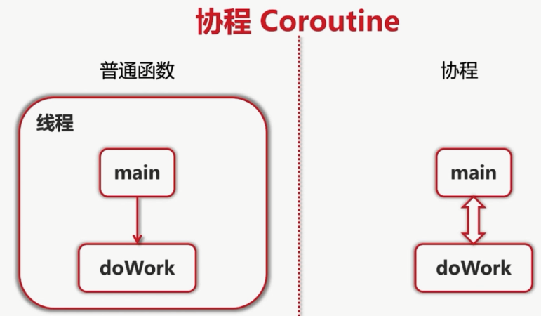
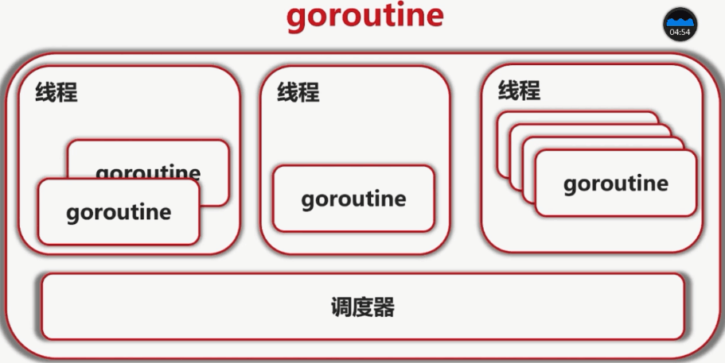

Go的协程¶
Go的协程可以看做是一个轻量级的线程，创建一个Go协程的成本很小。
go协程对比线程的优点¶
- 与线程相比，Go协程的开销非常小。Go协程的堆栈大小只有几kb，它可以根据应用程序的需要而增长和缩小，而线程必须指定堆栈的大小，并且堆栈的大小是固定的。
- Go协程被多路复用到较少的OS线程。在一个程序中数千个Go协程可能只运行在一个线程中。如果该线程中的任何一个Go协程阻塞（比如等待用户输入），那么Go会创建一个新的OS线程并将其余的Go协程移动到这个新的OS线程。所有这些操作都是 runtime 来完成的，而我们程序员不必关心这些复杂的细节，只需要利用 Go 提供的简洁的 API 来处理并发就可以了。
- Go 协程之间通过信道（channel）进行通信。信道可以防止多个协程访问共享内存时发生竟险（race condition）。信道可以想象成多个协程之间通信的管道。

go的协程：

实现一个简单的Go协程¶
实现Go的协程只需要在调用函数或方法时，前面加上关键字go，就可以让go并发的运行。
1 2 3 4 5 6 7 8 9 10 11 12 13 14 15 16 17 18 19 20 21 | |
在Go的主协程中使用休眠time.Sleep，等待其他协程执行完毕。
启动多个Go协程¶
1 2 3 4 5 6 7 8 9 10 11 12 13 14 15 16 17 18 19 20 21 22 23 24 25 26 | |